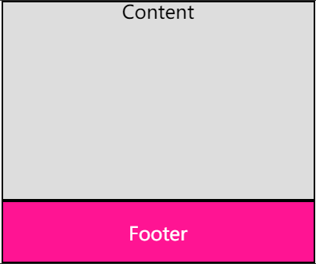
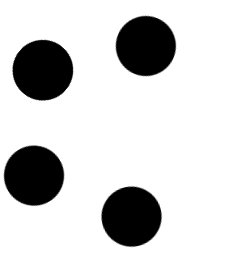
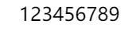
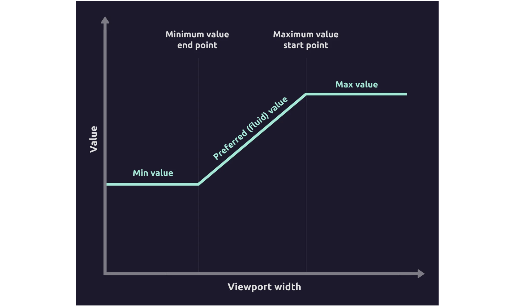

在 CSS 中，其实存在各种各样的函数。具体分为：
本文，将具体介绍其中的 CSS 数学函数（Math functions）中，已经被浏览器大规模支持的 4 个：
为什么说是被浏览器大规模支持的？因为除了这 4 个目前已经得到大规模支持的数学函数外，其实规范 CSS Values and Units Module Level 4 已经定义了诸如三角函数相关 sin()、cos()、tan() 等，指数函数相关 pow()、sqrt() 等等数学函数，只是目前都处于实验室阶段，还没有浏览器支持它们，需要给时间一点时间。
calc() 此 CSS 函数允许在声明 CSS 属性值时执行一些计算。
语法类似于
{
width: calc(100% - 80px);
}
一些需要注意的点：
+ 和 - 运算符的两边必须要有空白字符。比如，calc(50% -8px) 会被解析成为一个无效的表达式，必须写成calc(8px + -50%)* 和 / 这两个运算符前后不需要空白字符，但如果考虑到统一性，仍然推荐加上空白符看一个最常见的例子，页面结构如下：
<div class="g-container">
<div class="g-content">Content</div>
<div class="g-footer">Footer</div>
</div>
页面的 g-footer 高为 80px，我们希望不管页面多长，g-content 部分都可以占满剩余空间，像是这样：

这种布局使用 flex 的弹性布局可以轻松实现，当然，也可以使用 calc() 实现：
.g-container {
height: 100vh;
}
.g-content {
height: calc(100vh - 80px);
}
.g-footer {
height: 80px;
}
下面罗列一些 Calc() 的进阶技巧。
注意，calc() 中的加减法与乘除法的差异：
{
font-size: calc(1rem + 10px);
width: calc(100px + 10%);
}
可以看到，加减法两边的操作数都是需要单位的，而乘除法，需要一个无单位数，仅仅表示一个倍率：
{
width: calc(100% / 7);
animation-delay: calc(1s * 3);
}
calc() 函数是可以嵌套使用的，像是这样：
{
width: calc(100vw - calc(100% - 64px));
}
此时，内部的 calc() 函数可以退化写成一个括号即可 ()，所以上述代码等价于：
{
width: calc(100vw - (100% - 64px));
}
也就是嵌套内的 calc()，calc 几个函数字符可以省略。
calc() 支持不同单位的混合运算，对于长度，只要是属于长度相关的单位都可以进行混合运算，包含这些：
这里有一个有意思的点，运算肯定是消耗性能的，早年间，有这样一段 CSS 代码，可以直接让 Chrome 浏览器崩溃 Crash：
<div></div>
CSS 样式如下：
div {
--initial-level-0: calc(1vh + 1% + 1px + 1em + 1vw + 1cm);
--level-1: calc(var(--initial-level-0) + var(--initial-level-0));
--level-2: calc(var(--level-1) + var(--level-1));
--level-3: calc(var(--level-2) + var(--level-2));
--level-4: calc(var(--level-3) + var(--level-3));
--level-5: calc(var(--level-4) + var(--level-4));
--level-6: calc(var(--level-5) + var(--level-5));
--level-7: calc(var(--level-6) + var(--level-6));
--level-8: calc(var(--level-7) + var(--level-7));
--level-9: calc(var(--level-8) + var(--level-8));
--level-10: calc(var(--level-9) + var(--level-9));
--level-11: calc(var(--level-10) + var(--level-10));
--level-12: calc(var(--level-11) + var(--level-11));
--level-13: calc(var(--level-12) + var(--level-12));
--level-14: calc(var(--level-13) + var(--level-13));
--level-15: calc(var(--level-14) + var(--level-14));
--level-16: calc(var(--level-15) + var(--level-15));
--level-17: calc(var(--level-16) + var(--level-16));
--level-18: calc(var(--level-17) + var(--level-17));
--level-19: calc(var(--level-18) + var(--level-18));
--level-20: calc(var(--level-19) + var(--level-19));
--level-21: calc(var(--level-20) + var(--level-20));
--level-22: calc(var(--level-21) + var(--level-21));
--level-23: calc(var(--level-22) + var(--level-22));
--level-24: calc(var(--level-23) + var(--level-23));
--level-25: calc(var(--level-24) + var(--level-24));
--level-26: calc(var(--level-25) + var(--level-25));
--level-27: calc(var(--level-26) + var(--level-26));
--level-28: calc(var(--level-27) + var(--level-27));
--level-29: calc(var(--level-28) + var(--level-28));
--level-30: calc(var(--level-29) + var(--level-29));
--level-final: calc(var(--level-30) + 1px);
border-width: var(--level-final);
border-style: solid;
}
可以看到，从 --level-1 到 --level-30，每次的运算量都是成倍的增长，最终到 --level-final 变量，展开将有 2^30 = 1073741824 个 --initial-level-0 表达式的内容。
并且，每个 --initial-level-0 表达式的内容 -- calc(1vh + 1% + 1px + 1em + 1vw + 1cm)，在浏览器解析的时候，也已经足够复杂。
混合在一起，就导致了浏览器的 BOOM（Chrome 70 之前的版本），为了能看到效果，我们将上述样式赋给某个元素被 hover 的时候，得到如下效果：
;
}
calc() 函数非常重要的一个特性就是能够搭配 CSS 自定义以及 CSS @Property 变量一起使用。
最简单的一个 DEMO：
:root {
--width: 10px;
}
div {
width: calc(var(--width));
}
当然，这样看上去，根本看不出这样的写法的作用，好像没有什么意义。实际应用场景中，会比上述的 DEMO 要稍微复杂一些。
假设我们要实现这样一个 loading 动画效果，一开始只有 3 个球：
 {
animation: rotate 3s infinite linear;
}
.item:nth-child(2) {
animation: rotate 3s infinite -1s linear;
}
.item:nth-child(3) {
animation: rotate 3s infinite -2s linear;
}
如果有一天，这个动画需要扩展成 5 个球的话，像是这样：
 * -1s);
}
@keyframes rotate {
to {
transform: rotate(360deg);
}
}
而当动画修改成 5 个球时，我们就不需要修改 CSS，直接修改 HTML 即可，像是这样：
<div class="g-container">
<div class="g-item" style="--delay: 0"></div>
<div class="g-item" style="--delay: 0.6"></div>
<div class="g-item" style="--delay: 1.2"></div>
<div class="g-item" style="--delay: 1.8"></div>
<div class="g-item" style="--delay: 2.4"></div>
</div>
核心的 CSS 还是这一句，不需要做任何修改：
{
animation-delay: calc(var(--delay) * -1s);
}
完整的 DEMO，你可以戳这里：CodePen Demo -- Calc & CSS Variable Demo
还是上述的 Loading 动画效果，如果我的 HTML 标签中，有一个标签忘记填充 --delay 的值了，那会发生什么？
像是这样：
<div class="g-container">
<div class="g-item" style="--delay: 0"></div>
<div class="g-item" style="--delay: 0.6"></div>
<div class="g-item"></div>
<div class="g-item" style="--delay: 1.8"></div>
<div class="g-item" style="--delay: 2.4"></div>
</div>
{
animation-delay: calc(var(--delay) * -1s);
}
由于 HTML 标签没有传入 --delay 的值，并且在 CSS 中向上查找也没找到对应的值，此时，animation-delay: calc(var(--delay) * -1s) 这一句其实是无效的，相当于 animation-delay: 0，效果也就是少了个球的效果：

所以，基于这种情况，可以利用 CSS 自定义变量 var() 的 fallback 机制：
{
/* (--delay, 1) 中的 1 是个容错机制 */
animation-delay: calc(var(--delay, 1) * -1s);
}
此时，如果没有读取到任何 --delay 值，就会使用默认的 1 与 -1s 进行运算。
很多人在使用 CSS 的时候，会尝试字符串的拼接，像是这样：
<div style="--url: 'bsBD1I.png'"></div>
:root {
--urlA: "url(https://s1.ax1x.com/2022/03/07/";
--urlB: ")";
}
div {
width: 400px;
height: 400px;
background-image: calc(var(--urlA) + var(--url) + var(--urlB));
}
这里想利用 calc(var(--urlA) + var(--url) + var(--urlB)) 拼出完整的在 background-image 中可使用的 URL url(https://s1.ax1x.com/2022/03/07/bsBD1I.png)。
然而，这是不被允许的（无法实现的）。calc 的没有字符串拼接的能力。
唯一可能完成字符串拼接的是在元素的伪元素的 content 属性中。但是也不是利用 calc。
来看这样一个例子，这是错误的：
:root {
--stringA: "123";
--stringB: "456";
--stringC: "789";
}
div::before {
content: calc(var(--stringA) + var(--stringB) + var(--stringC));
}
此时，不需要 calc，直接使用自定义变量相加即可。
因此，正确的写法：
:root {
--stringA: "123";
--stringB: "456";
--stringC: "789";
}
div::before {
content: var(--stringA) + var(--stringB) + var(--stringC);
}
content: var(--stringA) + var(--stringB) + var(--stringC)中的加号可以省略。
此时，内容可以正常展示：

再强调一下，calc 的没有字符串拼接的能力，如下的使用方式都是无法被识别的错误语法：
.el::before {
/* 不支持字符串拼接 */
content: calc("My " + "counter");
}
.el::before {
/* 更不支持字符串乘法 */
content: calc("String Repeat 3 times" * 3);
}
min()、max()、clamp() 适合放在一起讲。它们的作用彼此之间有所关联。
由于在现实中，有非常多元素的的属性不是一成不变的，而是会根据上下文、环境的变化而变化。
譬如这样一个布局：
<div class="container"></div>
.container {
height: 100px;
background: #000;
}
效果如下，.container 块它会随着屏幕的增大而增大，始终占据整个屏幕：
对于一个响应式的项目，我们肯定不希望它的宽度会一直变大，而是当达到一定的阈值时，宽度从相对单位变成了绝对单位，这种情况就适用于 min()，简单改造下代码：
.container {
width: min(100%, 500px);
height: 100px;
background: #000;
}
容器的宽度值会在 width: 100% 与 width: 500px 之间做选择，选取相对小的那个。
在屏幕宽度不足 500px 时候，也就表现为 width: 100%，反之，则表现为 width: 500px：
 从多个值中，选取相对更大的值。
min()、max() 支持多个值的列表，譬如 width: max(1px, 2px, 3px, 50px)。
当然，对于上述表达：
width: max(1px, 2px, 3px, 50px) 其实等于 width: 50px。因此，对于 min()、max() 的具体使用而言，最多应该只包含一个具体的绝对单位。否则，这样的像上述这种代码，虽然语法支持，但是任何情况下，计算值都是确定的，其实没有意义。
min()、max()、clamp() 都可以配合 calc 一起使用。
譬如：
div {
width: max(50vw, calc(300px + 10%));
}
在这种情况下，calc 和相应包裹的括号可以省略，因此，上述代码又可以写成：
div {
width: max(50vw, 300px + 10%);
}
现在，有这样一种场景，如果，我们又需要限制最大值，也需要限制最小值，怎么办呢？
像是这样一个场景，**字体的大小，最小是 12px，随着屏幕的变大，逐渐变大，但是为了避免老人机现象（随着屏幕变大，无限制变大），我们还需要限制一个最大值 20px。
我们可以利用 vw 来实现给字体赋动态值，假设在移动端，设备宽度的 CSS 像素为 320px 时，页面的字体宽度最小为 12px，换算成 vw 即是 320 / 100 = 3.2，也就是 1vw 在 屏幕宽度为 320px 时候，表现为 3.2px，12px 约等于 3.75 vw。
同时，我们需要限制最大字体值为 20px，对应的 CSS 如下：
p {
font-size: max(12px, min(3.75vw, 20px));
}
看看效果：

通过 max()、min() 的配合使用，以及搭配一个相对单位 vw，我们成功的给字体设置了上下限，而在这个上下限之间实现了动态变化。
当然，上面核心的这一段 max(12px, min(3.75vw, 20px)) 看上去有点绕，因此，CSS 推出了 clamp() 简化这个语法，下面两个写法是等价的：
p {
font-size: max(12px, min(3.75vw, 20px));
/* 等价于 */
font-size: clamp(12px, 3.75vw, 20px);
}
clamp() 函数的作用是把一个值限制在一个上限和下限之间，当这个值超过最小值和最大值的范围时，在最小值和最大值之间选择一个值使用。它接收三个参数：最小值、首选值、最大值。
有意思的是，clamp(MIN, VAL, MAX) 其实就是表示 max(MIN, min(VAL, MAX))。
我们继续上面的话题。
在不久的过去，移动端的适配方面，使用更多的 rem 适配方案，可能会借助一些现成的库，类似于 flexible.js、hotcss.js 等库。rem 方案比较大的一个问题在于需要一段 JavaScript 响应视口变化，重设根元素的 font-size，并且，使用 rem 多少有点 hack 的感觉。
在现在，在移动端适配，我们更为推崇的是 vw 纯 CSS 方案，与 rem 方案类似，它的本质也是页面的等比例缩放。它的一个问题在于，如果仅仅使用 vw，随着屏幕的不断变大或者缩小，内容元素将会一直变大变小下去，这也导致了在大屏幕下，许多元素看着实在太大了！
因此，我们需要一种能够控制最大、最小阈值的方式，像是这样：
此时，clamp 就能非常好的派上用场，还是我们上述的例子，这一段代码 font-size: clamp(12px, 3.75vw, 20px)，就能将字体限制在 12px - 20px 的范围内。
因此，对于移动端页面而言，所有涉及长度的单位，我们都可以使用 vw 进行设置。而诸如字体、内外边距、宽度等不应该完全等比例缩放的，采用 clamp() 控制最大最小阈值。
在 Modern Fluid Typography Using CSS Clamp 一文中，对使用 clamp() 进行流式响应式布局还有更为深入的探讨，感兴趣的可以深入阅读。
总结一下，对于移动端页面，我们可以以 vw 配合 clamp() 的方式， 完成整个移动端布局的适配。它的优势在于：
还有一个技巧，利用 clamp() 配合负值，我们也可以反向操作，得到一种屏幕越大，字体越小的反向响应式效果：
p {
font-size: clamp(20px, -5vw + 96px, 60px);
}
看看效果：
、max()、clamp()，是构建现代响应式布局的重点，我们可以告别传统的需要 JavaScript 辅助的一些方案，基于 CSS 这些数学函数即可完成所有的诉求。
一些进阶阅读非常好的文章：